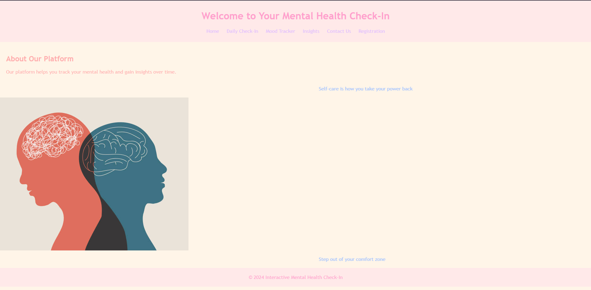
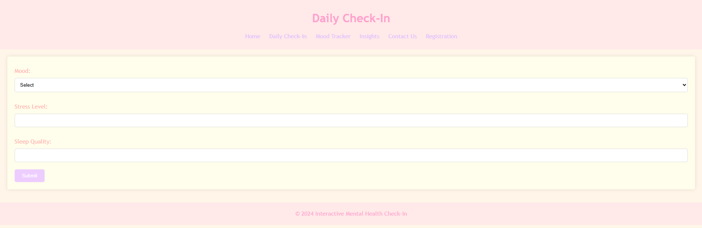
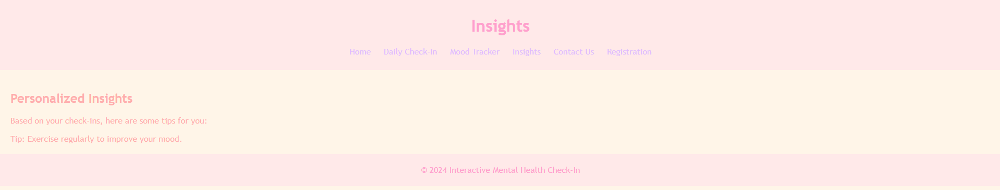
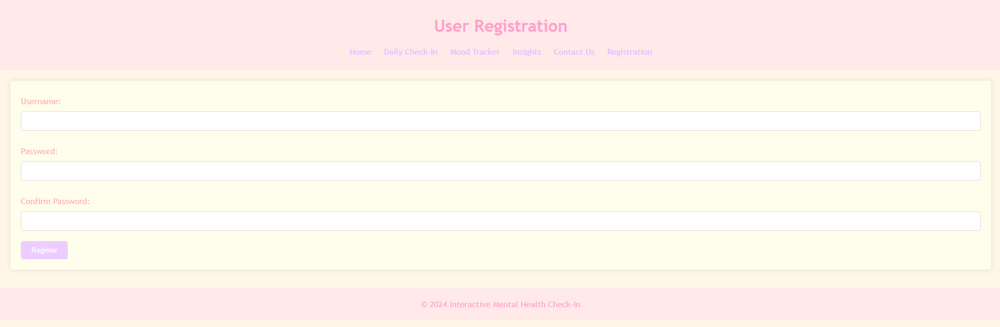

uni · open source · HTML / CSS / JS
Mood Tracker
A soft, simple mental-health check-in website where users log daily mood, stress, and sleep, then review trends on charts and light personalized insights.
The brief
Built as a university open-source assignment, this web app helps people track mental wellbeing in a calm, approachable UI. Users register, complete a daily check-in (mood, stress level, sleep quality), explore a mood chart over time, read basic insights, and reach a contact page — all in one small multi-page site.
What I worked on
I designed and built the full front-end flow: home and about content, registration, daily check-in forms, insights messaging, contact form, and a monthly mood line chart so check-ins turn into something visual and easy to review.





